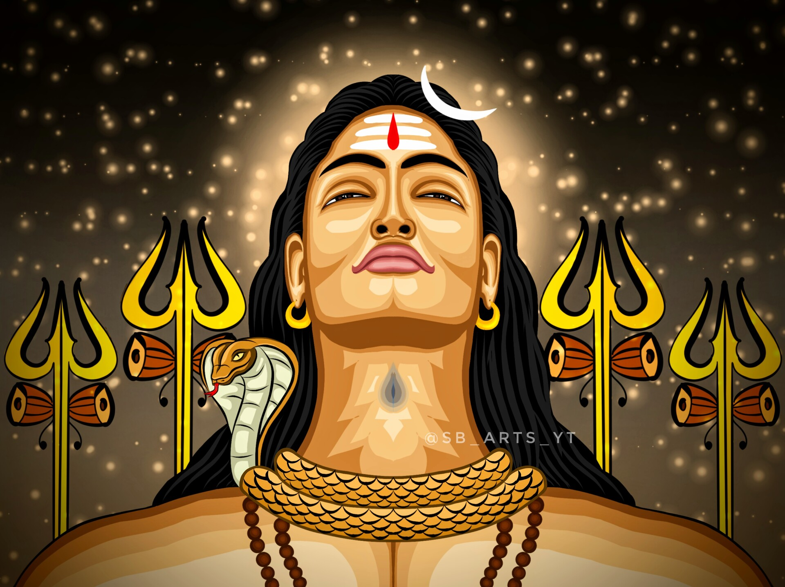
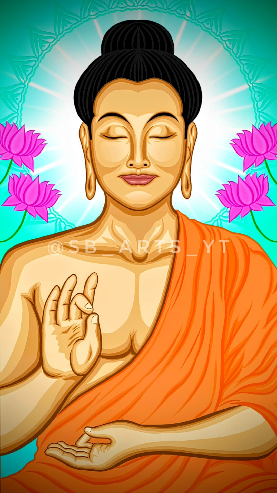
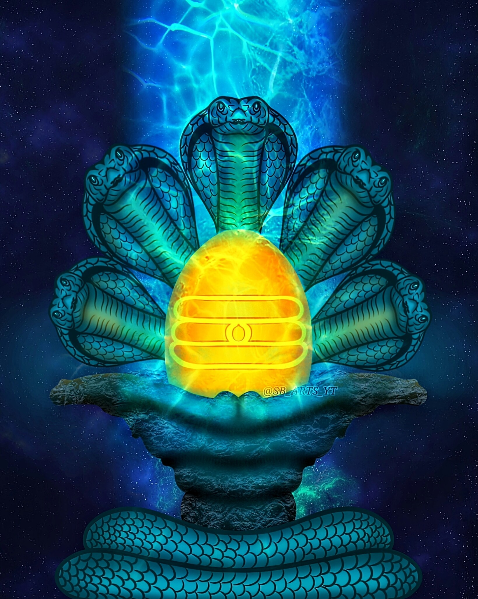
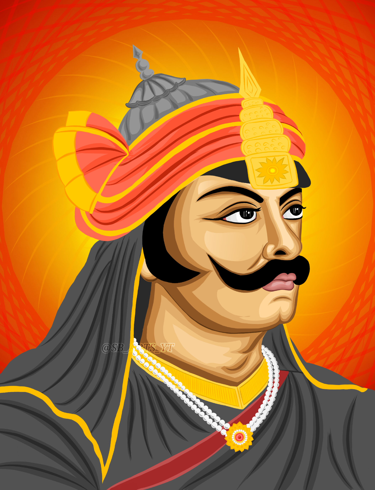
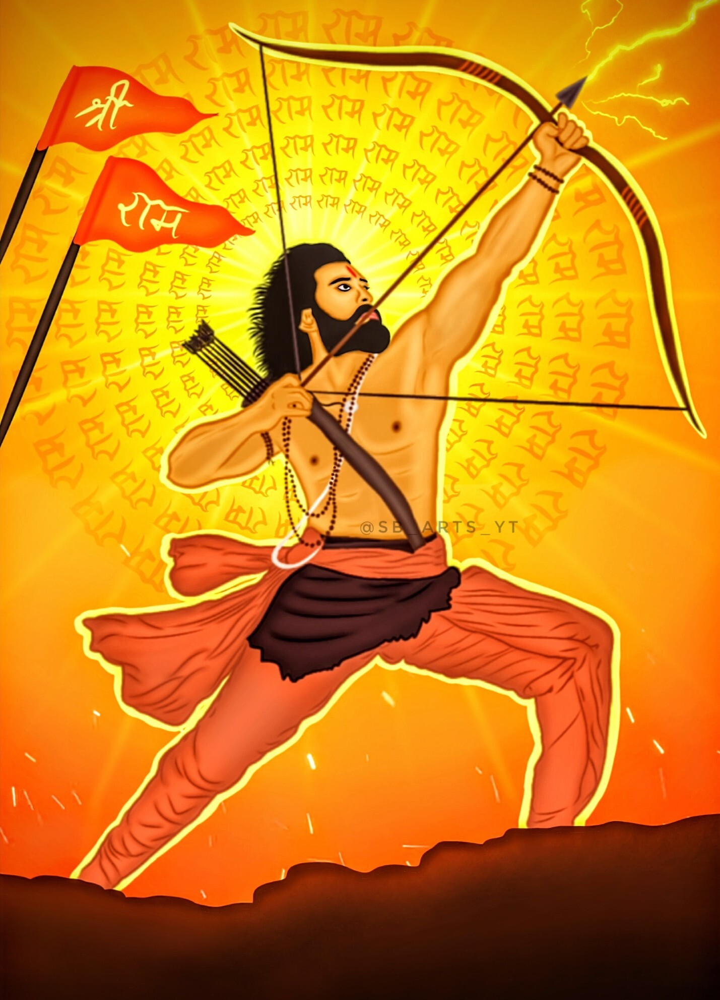
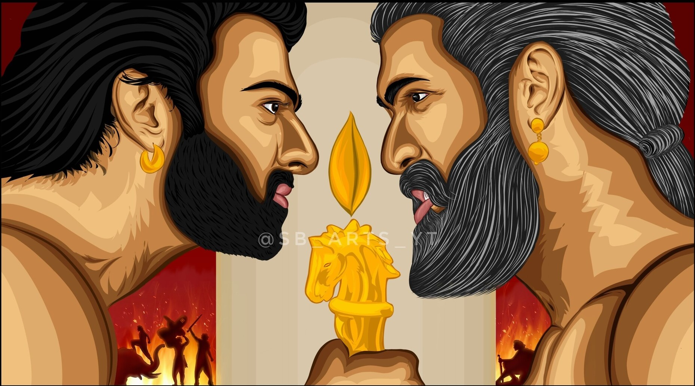

My name is Sachin Bhattacharjee, and I want to be a good web developer.
I am very passionate about creating visually beautiful web pages, and so
i am constantly learning to improve my skills. But also, Painting is my most
favorite hobby, since childhood. It has always been a source of inspiration
and a way for me to express myself creatively. Through this HTML webpage
I will show you some of my digital artworks. By the way this is my first
webpage. I hope you will like it. Thankyou.

ADIYOGI (THE FIRST YOGI):
Lord Shiva, also known as Adiyogi or the First Yogi,
is a revered deity in Hinduism. He embodies the
quintessential yogi, symbolizing both destruction
and creation. Legend has it that he introduced yoga
to the world, transmitting this ancient knowledge
to the seven sages. As the Adiyogi, Shiva represents
the infinite potential of human consciousness and
remains an inspiration for seekers on their spiritual
journey.
MAA DURGA:
Maa Durga, an iconic Hindu deity, represents the amalgamation of divine energies, known as Shakti. Revered for her valor, she defeats evil manifestations, epitomized by the buffalo demon Mahishasura. Adorned with divine accessories, her ten arms hold powerful weapons and blessings for devotees. Navaratri, a significant festival, honors her for nine nights, emphasizing inner purification and spiritual growth. She embodies femininity's power and symbolizes the triumph of good over evil. Devotees seek her blessings for protection, prosperity, and wisdom, acknowledging her as the nurturing and protective mother figure, transcending time and cultural boundaries.

LORD GAUTAM BUDDHA:
Gautama Buddha, the revered sage born in ancient India, remains an iconic symbol of enlightenment and compassion. His greatness lies in his profound teachings, known as Buddhism, which emphasize the Four Noble Truths and the Eightfold Path to liberate beings from suffering. Buddha's unwavering dedication to seeking truth and understanding the nature of existence led to his attainment of Nirvana, inspiring countless followers to pursue spiritual awakening. His legacy endures through the spread of Buddhism across the world, impacting millions with the message of peace, mindfulness, and the pursuit of inner tranquility.

LORD SHIVA ATMALINGA:
Lord Shiva's Atmalinga is a sacred and profound representation of his infinite power and divinity. It is an ethereal form of Shiva, encompassing the entire universe within it. The Atmalinga symbolizes the eternal and formless nature of God, transcending human comprehension. Legends speak of its creation, significance, and the devotion it invokes. As devotees worship the Atmalinga, they seek spiritual liberation and inner enlightenment. The essence of this mystical emblem lies in recognizing the cosmic connection and finding the divine presence within oneself, manifesting the unity of the universe and the soul.
SHRI KRISHNA JANMASHTAMI:
Shri Krishna Janmashtami, also known as Krishna Jayanti or Gokulashtami, is an auspicious Hindu festival celebrated to commemorate the birth of Lord Krishna. It falls on the eighth day (Ashtami) of the dark fortnight of the month of Bhadrapada according to the Hindu calendar. Devotees observe fasting, engage in prayers, and participate in festive rituals at temples and homes. The celebration includes devotional songs, dance performances depicting Krishna's life, and reenactments of his playful childhood incidents. The festival promotes love, devotion, and spiritual enlightenment while spreading the message of peace and righteousness.
MAA TRAYAMBAKE:
Maa Trayambake Devi, also known as Maa Tripura Sundari or Lalita Tripurasundari, is a revered Hindu Goddess. She symbolizes beauty, compassion, and divine motherhood. In Hindu mythology, she is considered the supreme deity, embodying the three primary aspects of existence: creation, preservation, and destruction. Her iconography often depicts her with four arms, holding a variety of symbolic objects. Devotees seek her blessings for protection, wisdom, and spiritual growth. Maa Trayambake Devi is a significant figure in various Hindu scriptures and holds a special place in the hearts of her worshippers.
MAA KALI:
Maa Kali, a revered Hindu goddess, epitomizes power, destruction, and motherly love. Adorned in black, she symbolizes the eternal darkness from which creation emerges. With her fearsome form and a necklace of severed heads, she vanquishes evil forces and protects her devotees. Yet, she is also a compassionate mother, showering blessings on those who seek her refuge. Her worship embodies both the fierce and nurturing aspects of the divine feminine.
LORD HANUMAN:
Lord Hanuman holds immense greatness in Hinduism. As a symbol of devotion, he epitomizes selfless service and loyalty, inspiring millions to follow the path of righteousness. His pivotal role in the Ramayana showcases his extraordinary strength, intelligence, and bravery. Hindus believe that chanting his prayers can grant protection, courage, and spiritual guidance. Hanuman's profound influence on devotees highlights his revered status as a beloved deity and a source of inspiration for all.
LORD SHIVA DHYANLINGA:
The The Shiva Dhyan Linga represents Lord Shiva in a state of deep meditation. It symbolizes his tranquil and introspective nature, capturing the essence of his divine energy. Devotees often meditate upon the Dhyan Linga to connect with Shiva's meditative and transformative qualities, seeking inner peace and spiritual growth. It is a revered form of worship in Hinduism, fostering a sense of mindfulness and spiritual awareness.
TRISHUL LOGO:
The Trishul logo is a symbolic representation of the Trishul, a traditional weapon associated with Lord Shiva in Hindu mythology. The Trishul, also known as the trident, consists of three prongs or points, which symbolize various aspects like creation, preservation, and destruction. The Trishul logo is often used by organizations, businesses, and religious institutions to represent strength, power, and protection. It is also a prominent emblem in martial arts and spiritual practices, signifying balance and the three fundamental forces of nature: Sattva (creation), Rajas (preservation), and Tamas (destruction).
KANTARA (MOVIE) :
Kantara is a 2022 Indian Kannada-language film that tells the story of a king who sets out on a journey to discover true happiness. He comes upon a holy stone in a forest occupied by Panjurli Daiva, a deity that protects the villagers that reside in the forest. The film explores the themes of spirituality, love, and sacrifice, and is set in the fictional village of Dakshina Kannada, which is known for its rich culture and traditions. The film features stunning visuals that bring the traditional culture of Kambla and Bhootha Kola to life.

VEER MAHARANA PRATAP:
Maharana Pratap was a legendary Rajput warrior and the 13th ruler of Mewar, a kingdom in present-day Rajasthan, India, during the 16th century. He is renowned for his indomitable spirit and valiant resistance against the Mughal Emperor Akbar's forces. Maharana Pratap's unwavering commitment to his principles and refusal to surrender earned him admiration and respect. His courageous battles, particularly the Battle of Haldighati, have become part of folklore and symbolize bravery and sacrifice. Maharana Pratap's legacy endures as a symbol of Rajput pride and honor.
CHHATRAPATI SHIVAJI MAHARAJ:
Chhatrapati Shivaji Maharaj, a legendary 17th-century Maratha warrior king, established the Maratha Empire in western India. Renowned for his military acumen, strategic prowess, and administrative skills, he valiantly fought against oppressive Mughal rule and promoted religious tolerance. His innovative naval tactics and guerilla warfare made him a formidable leader. Revered as a symbol of valor and pride, he remains an inspiration to millions, transcending generations. Shivaji Maharaj's legacy endures, as he is remembered for his commitment to justice, protection of his subjects, and unwavering devotion to his kingdom.
GURU GOBIND SINGH:
Guru Gobind Singh was the tenth and last Sikh Guru, born in 1666 in India. He was a warrior, poet, philosopher, and spiritual leader who played a crucial role in shaping Sikhism. Guru Gobind Singh established the Khalsa, a community of initiated Sikhs, and emphasized the principles of equality, justice, and self-defense. He fought against oppression and tyranny, inspiring his followers to stand up for righteousness. His teachings and writings, including the composition of the Sikh scripture, Guru Granth Sahib, continue to guide and inspire millions of Sikhs worldwide.
MALIKAPPURAM (MOVIE):
Malikappuram is a 2022 Indian Malayalam-language film directed by Vishnu Sasi Shankar. It is a coming-of-age story about an 8-year-old girl named Kallu who dreams of visiting Sabarimala. She sets out on a journey with her friend, Lord Ayyappan, to fulfill her dream. Along the way, they encounter many challenges, but they never give up. They learn about the importance of faith, hope, and resilience. The film is a heartwarming and inspiring story about the power of friendship and the importance of following your dreams.
MALIKAPPURAM FAN ART 2:
The film is set in a small village in Kerala and tells the story of an 8-year-old girl named Kallu who dreams of visiting Sabarimala. Kallu is a kind and compassionate girl who is always willing to help others. She is also very religious and has a strong faith in Lord Ayyappan. Kallu's dream of visiting Sabarimala is put to the test when she is diagnosed with a terminal illness. However, she never gives up on her dream and eventually gets her wish. The film is a heartwarming story about faith, hope and love. It is a reminder that even in the darkest of times, there is always light at the end of the tunnel.
SWAMI VIVEKANANDA:
Swami Vivekananda, a prominent Hindu monk and philosopher, was born in 1863 in India. A disciple of Sri Ramakrishna, he dedicated his life to spreading the teachings of Vedanta and the spiritual heritage of India. His historic speech at the Parliament of the World's Religions in 1893 in Chicago introduced the world to the depth and universality of Indian philosophy. Vivekananda's messages of religious tolerance, social upliftment, and self-realization continue to resonate globally. He founded the Ramakrishna Math and Mission, inspiring countless individuals to seek spiritual truth and work towards the betterment of humanity.
CHANDRA SHEKHAR AZAD:
Chandra Shekhar Azad, born on July 23, 1906, was a prominent Indian freedom fighter and revolutionary during the British colonial rule. He played a crucial role in the struggle for India's independence, leading daring acts against British authorities. Azad was a charismatic leader and a symbol of courage and determination, inspiring many to join the freedom movement. He formed the Hindustan Socialist Republican Association and fought for a sovereign India, emphasizing the importance of non-violent civil disobedience and selfless sacrifice. Azad's legacy continues to inspire generations to uphold the values of freedom and justice.

RAM AVATAR (RRR MOVIE):
The Ram avatar in the movie "RRR" is a captivating portrayal of Lord Rama, an iconic figure in Indian mythology. The film brilliantly brings to life the epic saga of valor, righteousness, and sacrifice. Ram's character is depicted as a noble warrior, embodying the essence of truth and honor. His unwavering commitment to dharma (righteousness) and his bond with fellow protagonist, Alluri Sitarama Raju, play pivotal roles in shaping the film's narrative. The Ram avatar in "RRR" serves as an inspiring symbol of courage and virtue, leaving a lasting impression on audiences.
SHAKTIMAAN LOGO:
Shaktimaan is a popular Indian superhero television series that aired in the early 2000s. The Shaktimaan logo represents the titular character, Shaktimaan, who possesses superhuman powers and fights against evil forces to maintain peace and justice. The logo features a stylized depiction of Shaktimaan in his iconic superhero costume, with his distinct headgear and emblem. The logo captures the essence of the show's theme and resonates with its young audience, symbolizing hope, courage, and the triumph of good over evil. Shaktimaan remains a beloved and iconic superhero in Indian television history.

BAHUBALI 2: THE CONCLUSION:
"Baahubali 2: The Conclusion" is a 2017 Indian epic film, directed by S.S. Rajamouli. The movie continues the story of Baahubali, the heroic prince of Mahishmati, and his conflict with Bhallaladeva, his treacherous cousin. Known for its grandeur and visual spectacle, the film became a massive box-office success and garnered widespread acclaim.
BAHUBALI 1: THE BEGINING:
"Baahubali: The Beginning" is an Indian epic historical film released in 2015. Directed by S.S. Rajamouli, the movie follows the journey of Amarendra Baahubali, a heroic prince destined for greatness. It delves into the tale of treachery, love, and valor, with stunning visuals and captivating storytelling. The film became a massive commercial success and received widespread acclaim for its grandiose sets, impressive action sequences, and powerful performances by the cast, including Prabhas, Rana Daggubati, Anushka Shetty, and Tamannaah Bhatia. "Baahubali: The Beginning" remains one of India's highest-grossing films and achieved international recognition.
RRR (RISE, ROAR AND REVOLT):
RRR is a highly anticipated Indian film directed by S.S. Rajamouli. Set in the 1920s, it revolves around fictionalized freedom fighters Alluri Sitarama Raju and Komaram Bheem, played by Ram Charan and Jr. NTR, respectively. The movie showcases their struggle against the British Raj and the Nizam of Hyderabad. With high-octane action sequences and impressive visuals, RRR promises to be an epic cinematic experience.
RRR MOVIE TITLE CARD:
The "RRR" movie title card is a visual spectacle, exuding grandeur and excitement. Its bold and stylized letters in red and black evoke passion and power, hinting at an epic narrative. The font choice strikes a perfect balance between historical authenticity and contemporary appeal, while the overall design builds anticipation for the thrilling cinematic experience ahead.
K.G.F (KOLAR GOLD FIELD):
"KGF" (Kolar Gold Fields) is an Indian film franchise consisting of two parts: "KGF: Chapter 1" released in 2018 and "KGF: Chapter 2" in 2021. Directed by Prashanth Neel, the films follow the journey of Rocky, portrayed by Yash, as he rises from poverty to rule the Kolar Gold Fields' criminal underworld. The franchise gained massive popularity for its intense action, captivating storytelling, and Yash's stellar performance.
K.G.F FAN ART 2:
The "KGF" films beautifully depict the strength of maternal emotions. Amidst intense action, mothers' love and sacrifice inspire the characters. Their presence adds heartfelt depth, highlighting the importance of family bonds. The franchise is elevated by showcasing the profound impact of mothers, making it relatable and emotionally resonant for audiences.
NANDI ASTRA (BRAHMASTRA MOVIE):
In the movie "Brahmastra," Nandi Astra is a legendary and powerful weapon from Hindu mythology, representing a divine bow associated with Lord Shiva. The film, directed by Ayan Mukerji, explores the mystical and cosmic aspects of this mythical bow. Characters embark on a quest to harness its immense power to protect the world from dark forces and unravel the secrets of existence. "Brahmastra" weaves together elements of mythology and fantasy, creating an epic and visually stunning cinematic experience.
SHANG-CHI AND THE LEGEND OF 10 RINGS:
"Shang-Chi and the Legend of the Ten Rings" delves into a tapestry of emotions, weaving action-packed sequences with poignant moments. The film portrays Shang-Chi's journey of self-discovery and identity, sparking emotions of courage, vulnerability, and determination. Complex relationships evoke feelings of loyalty, love, and betrayal. The exploration of cultural heritage adds layers of nostalgia and connection. Overall, the movie skillfully combines adrenaline-pumping scenes with heartfelt emotions, offering audiences a dynamic and resonant cinematic experience.
BLACK PANTHER (MOVIE):
"Black Panther," released in 2018, is a groundbreaking Marvel superhero film directed by Ryan Coogler. It stars Chadwick Boseman as T'Challa, the king of Wakanda, a fictional African nation with advanced technology. The film's cultural significance lies in its empowering representation of Black characters and African culture, challenging Hollywood norms. It received widespread acclaim for its compelling story, stellar performances, and stunning visual effects. "Black Panther" not only became a box-office success but also sparked important conversations about diversity and inclusion in the film industry.
SPIDERMAN (MOVIE):
Spider-Man is a beloved superhero character created by Stan Lee and Steve Ditko, making his debut in 1962. Also known as Peter Parker, he gained superpowers after being bitten by a radioactive spider. As a high school student balancing his personal life and crime-fighting, Spider-Man embodies relatability and humor. His iconic red-and-blue costume, web-slinging abilities, and commitment to justice have made him a cultural icon. Numerous comic series, movies, TV shows, and merchandise have solidified Spider-Man's enduring popularity and his status as one of Marvel's most recognizable heroes.